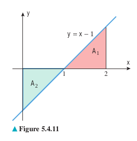
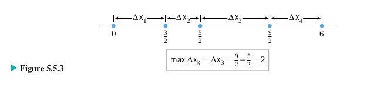

Our main goal in this section is to use the rectangle method to give a precise mathematical definition of the “area under a curve.”
Дефиниција на површина како лимес, Сигма нотација
Ознака за изразување на суми со поголем број на собироци во компактен облик (се користи големата грчка буква `sum` - сигма.
`sum_(k=m)^n f(k)`
m и n се нарекуваат долна и горна граница на сумирањето, а буквата k сe нарекува индекс на сумирањето.
Пример:
`sum_(k=4)^8 k^3 = 4^3 + 5^3 + 6^3 + 7^3 + 8^3`
`sum_(k=1)^5 2k = 2*1 + 2*2 + 2*3 + 2*4 + 2*5`
`sum_(k=0)^5 (2k+1) = (2*0+1) + (2*1+1) + (2*2+1) + (2*3+1) + (2*4+1) + (2*5+1)`
Една сума може да биде запишана на повеќе начини со користење на сигма нотација со различни граници на сумирање и соодветно различни собироци. На пример,
`sum_(i=1)^5 2i = 2+4+6+8+10 =sum_(j=0)^4 (2j + 2)= sum_(k=3)^7 (2k-4)`
Пример:Да се изрази `sum_(k=3)^7 5^(k-2)`во сигма нотација во која долната граница на сумата е `0` наместо `3`.
`sum_(k=3)^7 5^(k-2) = 5^1 + 5^2 + 5^3 + 5^4 + 5^5`
`= sum_(k=3)^7 5^(k-2) = 5^(3-2) + 5^(4-2) + 5^(5-2) + 5^(6-2) + 5^(7-2)`
`= sum_(j=0)^4 5^(j+1) = 5^(0+1) + 5^(1+1) + 5^(2+1) + 5^(3+1) + 5^(4+1)`
Теорема 1
i. `sum_(k=1)^n ca_k = c sum_(k=1)^n a_k`
ii. `sum_(k=1)^n (a_k+b_k) = sum_(k=1)^n a_k + sum_(k=1)^n b_k`
iii. `sum_(k=1)^n (a_k-b_k) = sum_(k=1)^n a_k - sum_(k=1)^n b_k`
Теорема 2
Пример 3
Пресметај: `sum_(k=1)^30 [k(k+1)]`
Решение:
`sum_(k=1)^30 [k(k+1)] = sum_(k=1)^30 (k^2 + k)`
`= (30(30+1)(60+1))/(6) + (30(30+1))/2 = 9920`
Метод на правоаголници
Нека `R` ја означува областа ограничена од горе со кривата која е график на `y = f (x)`, од долу со `x` – оската, и од страните со вертикалните прави `x = a` и `x = b`. Ќе дадеме дефиниција на плоштината `R`, oзначена со `A(R)` на следниот начин:
Го делиме интервалот `[a, b]` на `n` подинтервали со еднаква должина, со точките `a = x_0 < x_1 < ... < x_(n-1) < x_n=b`.

Секој интервал има должина `Delta_x = (b-a)/n` `x_k = a + kDelta_x` `k = 0, 1, 2, 3, ... , n`.
Избираме произволни точки `x_1^* < x_2^* < ... < x_n^*` од секој подинтервал, т.е. `x_k^* in [x_(k-1), x_k ]`, `k=1,2,...,n`.
Над секој подинтервал `[x_(k-1), x_k ]` цртаме правоаголник со висина f(x_k^* ), `k = 1,2,...,n.`

Фигурата составена од сите правоаголници формира област `R_n` со плоштина
`A(R_n) = f(x_1^*)Delta_x + f(x_2^*)Delta_x + f(x_n^*)Delta_x = sum_(k=1)^n f(x_k^*)`
`A(R_n)` приближно ја претставува (апроксимира) плоштината на областа `R`, односно
`A(R) ~~ = sum_(k=1)^n f(x_k^*)`
Ја дефинираме плоштината на областа `R` како
`A(R) = lim(n-> +oo) A(R_n) = lim_(n->+oo) sum_(k=1)^n f(x_k^*)`
На овој начин ја добиваме следната дефиниција за плоштина под крива.
Дефиниција 1. (Плоштина под крива)
Ако функцијата `f` е непрекината на интервал `[a, b]` и ако `f (x) >= 0` за секој `x`од `[a, b]`, тогаш плоштината `А` под кривата `y = f (x)`, над интервалот `[a, b]` е дефинирана со
`A(R) = lim_(n-> +oo) A(R_n) = lim_(n->+oo) sum_(k=1)^n f(x_k^*)`
Најчести начини на избор на точките `x_k^*`
Леви крајни точки на подинтервалите, т.е.
`x_k^*=x_(k-1) = a + (k-1)Delta_x`
Десни крајни точки на подинтервалите
`x_k^*=x_k = a + k Delta_x`
Средни точки на подинтервалите
`x_k^*=(x_(k-1)+ x_k)/2 = a + (k-1/2)Delta_x`
Пример:
Да се определи плоштината на областа меѓу графикот на `(x) = x^2` и `x`-оската, на интервалот `[0, 1]`, со помош на апроксимација со десни правоаголници.
Решение
Имаме
`Delta_x = (b-a)/n = (1-0)/n = 1/n`
и
`x_k^* = a + k Delta_x = k/n`
Сега
`sum_(k=1)^n f(x_k^*) Delta_x = sum_(k=1)^n (x_k^*)^2 Delta_x = sum_(k=1)^n (k/n)^2 1/n = 1/n^3 sum_(k=1)^n k^2`
`= 1/3[(n(n+1)(2n+1))/6] = 1/3 + 1/(2n) + 1/(6n^2)`
Според тоа,
`A = lim_(n->+oo) sum_(k=1)^n f(x_k^*) Delta_x = lim_(n->+oo) [1/3 + 1/(2n) + 1/(6n^2)] = 1/3`
Теорема 3
Точни се следните тврдења:
i. `lim_(n->+oo) 1/n sum_(k=1)^n 1 = 1`
ii. `lim_(n->+oo) 1/n^2 sum_(k=1)^n k = 1/2`
iii. `lim_(n->+oo) 1/n^3 sum_(k=1)^n k^2 = 1/3`
iv. `lim_(n->+oo) 1/n^4 sum_(k=1)^n k^3 = 1/4`
Плоштина со знак
Ако `x_k^*` е број кој е избран така што `f(x_k^*) < 0`, тогаш `f(x_k^*)Delta_x` е плоштина на правоаголник со ширина `Delta_x` и должина `abs(f(x_k^*))`, земена со негативен знак.
Според тоа, кога функцијата `f(x)` прима и негативни вредности, како што е функцијата претставена на горните два цртежи, изразот
`A = lim_(n->+oo) sum_(k=1)^n f(x_k^*) Delta_x = A_I - A_(II) + A_(III)`
ја дава разликата помеѓу соодветните плоштини над `x`-оската и под `x`- оската. Во овој случај плоштината помеѓу кривата `y = f (x)` и `x`-оската се нарекува плоштина со знак.
Дефиниција 2. (Плоштина со знак)
Ако функцијата `f` е непрекината на `[a, b]`, тогаш плоштина со знак `A` помеѓу кривата `y = f (x)` и `x`-оската, на интервалот `[a, b]` е дефинирана со
`A = lim_(n->+oo) sum_(k=1)^n f(x_k^(**)) Delta_x`
Пример 5: Да се најде плоштината со знак помеѓу графикот на функцијата `f (x) = x - 1` и `x`-оската, на интервалот `[0, 2]`. Да се работи со метод на леви правоаголници.
Решение Имаме
`Delta_x = (b-a)/n = (2-0)/n = 2/n`.
и
`x_k^(**) = a = (k-1)Delta_x = (k-1)2/n`.
Според тоа,
`f(x_(k)^(**))Delta_x =(x_k^(**) -1) Delta_x = [(k-1)2/n - 1]2/n = (4/n^2)k - 4/n^2 - 2/n`
и
`sum_(k=1)^n f(x_(k)^(**))Delta_x = sum_(k=1)^n [(4/n^2)k - 4/n^2 - 2/n] = 4(1/n^2 sum_(k=1)^n k) -4/n(1/n sum_(k=1)^n 1) - 2(1/n sum_(k=1)^n 1)`
Затоа:
`A = lim_(n->+oo) sum_(k=1)^n f(x_(k)^(**))Delta_x = lim_(n_>+oo) [4(1/n^2 sum_(k=1)^n k) -4/n(1/n sum_(k=1)^n 1) - 2(1/n sum_(k=1)^n 1)]`
`= 4(1/2) -0*1 - 2*1`
Риманови суми и определен интеграл
Во дефиницијата за плоштина со знак, претпоставивме дека за произволен позитивен број `n` интервалот `[a, b]` е поделен на `n` подинтервали со еднаква должина, кои ќе бидат основи на правоаголниците со кои се апроксимира.
За некои функции може да биде позгодно да се користат правоаголници со различни ширини; сепак, ако решиме да ја апроксимираме плоштината преку правоаголници со различни ширини, тогаш важно е подинтервалите да бидат конструирани така што ширината на секој правоаголник да тежи кон нула кога `n` се зголемува (Слика 1).
Затоа, мора да ги исклучиме ситуациите како на Слика 2, во кои што десната половина на интервалот останува неподелена.
Ако допуштиме вакво разбивање (Слика 2), грешката од апроксимацијата нема да тежи кон нула кога `n` се зголемува.
Дефиниција 1
Множеството точки `P = {x_0 , x_1 , ... , x_n }` се нарекува партиција (или разбивање) на интервалот `[a, b]`, ако
`a = x_0 < x_1 < ... < x_(n-1) < x_n = b`.
Нека `P` е произволна партиција на `[a,b]`. Ширината на `k`-тиот подинтервал ќе ја означуваме со `Deltax_k = x_k-x_(k-1)`, за `k = 0,1,2,...,n`.
Кога `Deltax_k= Deltax= (b-a)/n` разбивањето се нарекува регуларно.
За секое регуларно разбивање `Deltax_k->0`, кога `n->+oo`.
Во општ случај, нека `max Deltax_k` ја означува најголемата од должините на подинтервалите. Тој број го нарекуваме норма на партицијата `P`.
Ако `max Deltax_k ->0`, кога `n->+oo`, тогаш `Deltax_k ->0`, за секој `k=1,2,3,...,n`.
Апроксимација на плоштина со произволна партиција, со променлива должина `Deltax_k`.
Дефиниција 2
Функција `f` се нарекува интеграбилна на затворен интервал `[a, b]`, ако лимесот
`lim_(maxDeltax_k->0) sum_(k=1)^n f(x_k^(**)) Deltax_k`.
постои и не зависи од изборот на партицијата или од изборот на точките `x_k^(**)` во подинтервалите. Во тој случај лимесот се означуваме со
`int_a^b f(x)dx = lim_(maxDeltax_k->0) sum_(k=1)^n f(x_k^(**)) Deltax_k`.
и се нарекува определен интеграл (или Риманов интеграл) на `f` од `a` до `b`.
Броевите `a` и `b` се нарекуваат долна граница на интеграција и горна граница на интеграција, соодветно, а `f (x)` се нарекува интегранд.
Сумата `sum_(k=1)^n f(x_k^(**)) Deltax_k` се нарекува Риманова сума.
Пример 1: Со користење на дефиницијата `2`, да се покаже дека ако `f(x) = c`, тогаш
`int_a^b f(x) dx = c(b-a)`
Решение: Бидејќи `f(x) = c` е константна функција, следува дека не е битно кои вредности на `x_k^(**)` сe избрани,
`sum_(k=1)^n f(x_k^(**)) Deltax_k = sum_(k=1)^n c Deltax_k = c sum_(k=1)^n Deltax_k = c(b-a)`
Бидејќи секоја Риманова сума има вредност `c(b – a)`, следува дека
`lim_(maxDeltax_k->0) sum_(k=1)^n f(x_k^(**)) Deltax_k = lim_(maxDeltax_k->0) c(b-a) = c(b-a)`.
Пример 2: Нека функцијата `f (x)` е дадена со
`f(x) = {(1 ,x in (0, 1]),(0, x=0):}`
Да се докаже дека `int_a^b f(x)dx =1`
Решение: Прво да забележиме дека `lim_(x->0^+) f(x) = lim_(x->0^+) 1 = 1 != 0 = f(0)`
односно, f не е непрекината на интервалот `[0,1]`.
Да разгледаме произволна партиција на `[0,1]` и произволен избор на `x_k^(**)` , соодветни на партицијата. Тогаш `x_1^(**) = 0` или `x_1^(**) !=0`.
Ако `x_1^(**) != 0`, тогаш
`sum_(k=1)^n f(x_k^(**)) Deltax_k = sum_(k=1)^n Deltax_k = 1`
Ако `x_1^(**) = 0`, тогаш `f (x_1^(**) ) = f (0) = 0` и
`sum_(k=1)^n f(x_k^(**)) Deltax_k = sum_(k=2)^n Deltax_k = 1-Deltax_1`
Во двата случаи лимесот на Римановата сума е 1. Имено, `Deltax_1 ->0` кога `max Deltax_1->0`. Затоа:
`int_a^b f(x)dx =1`
Теорема 2
Ако функција `f` е непрекината на интервал `[a, b]`, тогаш `f` е интеграбилна на `[a, b]`. Обратното тврдење во општ случај не е важи.
Плоштината со знак помеѓу графикот на интеграбилна функција `f` и интервалот `[a, b]` е
`A = int_a^b f(x)dx`
Пример 3: Да се скицира областа чија што плоштина е претставена со определениот интеграл, и да се пресмета интегралот со помош на соодветна формула од геометрија.
Пример 4: Да се пресметаат интегралите
Решение:
Својства на определен интеграл
Дефиниција 3
i. Ако `a` е во доменот на `f`, дефинираме.
`int_a^a f(x)dx = 0`
ii. Ако `f` е интеграбилна на `[a, b]`, дефинираме
`int_a^b f(x)dx = -int_b^a f(x)dx`
Теорема 3
Ако `f` и `g` се интеграбилни на `[a, b]` и ако `c` е константа, тогаш `cf`, `f + g` и `f - g` се интеграбилни на `[a, b]` и
i. `int_a^b cf(x)dx = c int_a^b f(x)dx`
ii. `int_a^b [f(x) + g(x)]dx = int_a^b f(x)dx + int_a^b g(x)dx`
iii. `int_a^b [f(x) - g(x)]dx = int_a^b f(x)dx - int_a^b g(x)dx`
iv. Произволна линеарна комбинација од функциите `f_1 , f_2 , ..., f_n` кои се интеграбилни на `[a, b]` е интеграбилна функција на `[a, b]` и:
`int_a^b [c_1f_1(x) + c_2f_2(x) + ... + c_nf_n(x)]dx`
`= c_1int_a^b f_1(x)dx + c_2int_a^b f_2(x)dx + ... + c_nint_a^b f_n(x)dx`
каде што `c_1 ,c_2 ,...,c_n` , `n in N`, се константи.
Теорема 4
Ако `f` е интеграбилна на затворен интервал кој ги содржи точките `a`, `b`, и `c`, тогаш
`int_a^b f(x)dx = int_a^c f(x)dx + int_c^b f(x)dx`
без оглед на тоа како се распоредени точките.
Теорема 5
i. Ако `f` е интеграбилна на `[a, b]`и `f (x)>=0` за секој `x in [a, b]` ,тогаш
`int_a^b f(x)dx >= 0`
ii. Ако `f` е интеграбилна на `[a, b]`и `f (x)>=g(x)` за секој `x in [a, b]` ,тогаш
`int_a^b f(x)dx >= int_a^b g(x)dx`